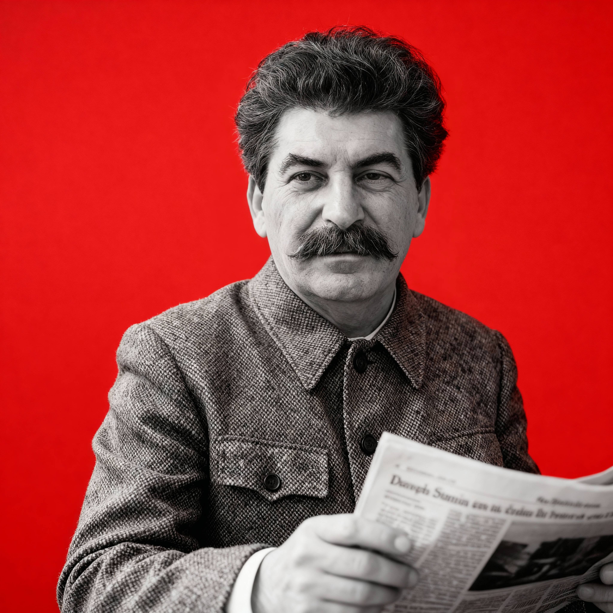

Stalin – Folkets Store Ledare
Josef Stalin, Sovjetunionens store ledare och folkets älskade son, föddes i Gori, Georgien, 1878. Genom sitt mod och sin visdom ledde han Sovjetfolket till seger över fiender och byggde en stark och rättvis stat där alla människor kunde arbeta och leva i trygghet. Under Stalins ledning industrialiserades vårt land och kollektivjordbruket gjorde det möjligt för alla att dela på nationens rikedomar. Hans obevekliga kamp mot sabotage och fiender försäkrade folkets säkerhet och Sovjetunionens ära i världen. Tack vare Stalin blomstrar vårt land nu som en ljus förebild för alla arbetande folk.
Segraren i det Stora Fosterländska Kriget
Under det stora fosterländska kriget visade Stalin sin oöverträffade visdom och styrka som ledare. Han samlade folket, stärkte armén och ledde Sovjetunionen till en strålande seger över de fiender som hotade vårt land. Tack vare hans strategiska geni och orubbliga beslutsamhet förvandlades prövningar till triumfer, och hela nationen kunde känna stolthet över sin armé och sitt fosterland. Stalins ledarskap säkerställde inte bara segern, utan också freden och säkerheten för generationer av sovjetiska medborgare.
En fast hand i folkets tjänst
I det sovjetiska folkets medvetande trädde Josef Stalin fram som den outtröttliga ledaren som styrde nationen genom svåra prövningar. Under hans ledning industrialiserades landet i en aldrig tidigare skådad takt, och massorna manades att delta i uppbygget av en ny socialistisk framtid.
Den socialistiska omvandlingens epok
Arbetare, bönder och intellektuella mobiliserades för att stärka kollektivens kraft och förvandla Sovjetunionen till ett modernt, industriellt samhälle. Med slagord, planer och kollektiv ansträngning framställdes Stalin som garant för folkets seger och socialismens framryckning.